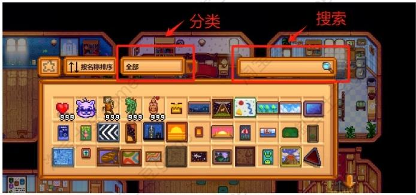

快乐家具设计师工具
🪑 家具与装饰
如何用工具快速挑选家具、家具都能从哪里找到。
1【快乐家具设计师工具】使用说明
- 添加的家具可使用此工具，右键点击家具目录，开启挑选家具。
- 可以用来把几个家具目录合并在一起打开列表，方便我们找家具。
- 具体使用请查看视频教程介绍。
2家具从哪里找？
- 可从"快乐家具设计师工具"打开找寻。
- 一部分可从罗宾（Robin）那里购买相应的家具目录打开。
- 或者用"CJB物品作弊菜单"，按 I 键打开，从家具分类里找到。
3如何获得这些家具
方法一：CJB 物品菜单
按 I 键打开物品菜单，翻到"装饰：家具"分类即可找到家具。

方法二：去罗宾那里购买家具目录
| 目录名称 | 价格 |
|---|---|
| H&W 农贸市集目录 | 35000 G |
| H&W 精致烘焙坊家具目录 | 35000 G |
| H&W 烘焙坊、咖啡厅家具目录 | 75000 G |
| HxW Restaurant Furniture Catalogue | 35000 G |